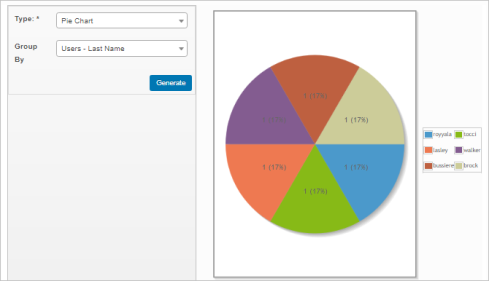
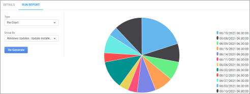
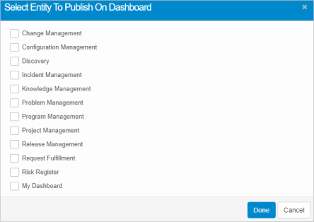
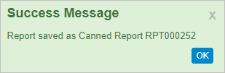
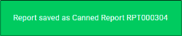
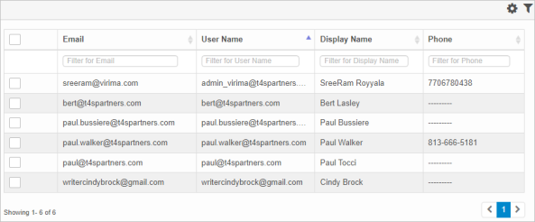

Run Report
| You must configure the Report Properties and Conditions before this step in the report generation process. |
The Run Reports tab provides a variety of options, including the following:
Refer to the sections below for more details.

Example Scenario
The Run Report tab fields selected in this example are:
Other options include Tabular, Bar Chart, Line Chart, and Donut Chart.
Other options based on the Type of report include Group By, Columns, X-Axis, and Y-Axis.
The generated report would look similar to the following:


Generate a New Report
To generate a new report, do the following:
| 1. | Enter and save the Report Properties. The window refreshes, and the Details and Run report tabs display. |
| 2. | In the Type field, click the drop-down list and select a report. The type of report selected - for example, Tabular, Pie Chart, and so forth - determines what additional fields display. |
| 3. | In the Group by field, click the drop-down list and select how to group the results. |
| 4. | When all sections are made, click Generate. If a report: |
The generated report is sent via email to the user roles specified.
| For System Administrators: Refer to Admin > Users > Users > Access Management > Email Preferences.to configure user roles. |
Re-Generate an Existing Report
If the report has been generated previously, and the Report Properties are changed on the Details Tab, the report must be re-generated.
To regenerate the report, do the following:
| 1. | Repeat steps 1-3 above (under Generate a New Report). |
| 2. | At Step 4, click the Re-generate button. |
Use this function to publish the report, making it visible to selected users and available for placement in defined locations (such as on the user's dashboard).
| 1. | While viewing the Run Reports tab, from the Select Actions drop-down list choose Publish. The Select Entity to Publish on Dashboard dialog box displays. |
| 1. | While viewing the Run Reports tab, click the Publish button. The Select Entity to Publish on Dashboard dialog box displays. |

| 2. | Select one or more items. |
| 3. | When all selections are made, click Done. |
Use this function to save the report configuration so it can be used again without starting from scratch. The canned report is automatically saved to the Canned Reports list.
| 1. | While viewing the Run Reports tab, from the Select Actions drop-down list, choose Save as Canned. A success message displays containing the canned report number. |
| 2. | Click OK. |
| 3. | Click on the X to close the message. |


Use this function to save the current visual report as an image.
While viewing the Run Reports tab, from the Select Actions drop-down list, choose Save as Image. The image is saved based on your image configuration settings, such as file type and location (for example, automatically saves to the Windows Downloads folder).
Use this function to view the data related to data gathered when generating the report.
| 1. | While viewing the Run Reports tab, from the Select Actions drop-down list, choose View Data. The Access Management window displays and shows a list of relevant data. |

| 2. | To view additional details for an item, click on it. The applicable window displays. For example, when a user is selected from the list above, the Access Management window displays containing the user's information. |
Other Functions and Page Elements
Related Topics